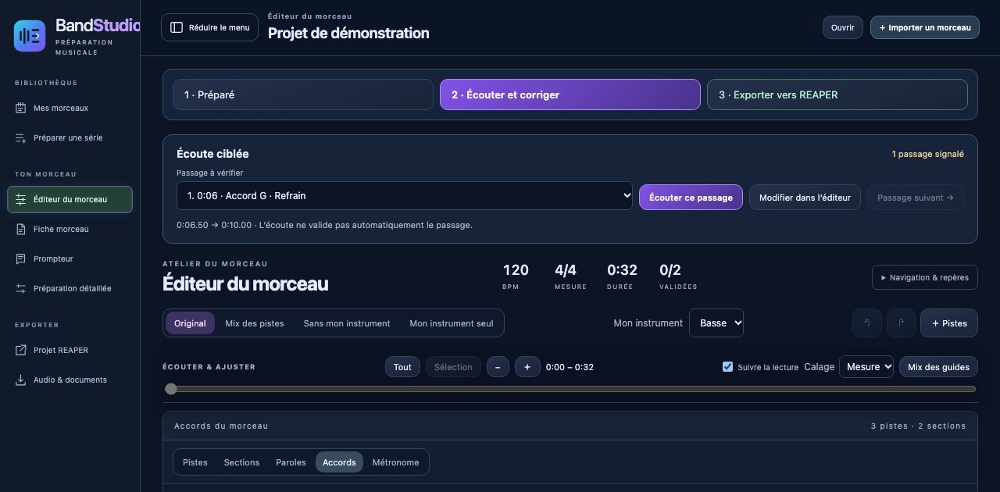

Préparer un morceau pour REAPER.
De l’import audio au projet REAPER, travaille sur ton propre enregistrement en huit étapes.
Étape 1 / 8
Importer un morceau
Dans Mes morceaux, importe un fichier audio de ton ordinateur.
- Laisse Préparer automatiquement après l’import coché pour lancer les analyses dès l’import.
- Vérifie le titre et l’artiste. BandStudio s’en sert pour retrouver les paroles et les grilles du bon morceau.
- Pour plusieurs fichiers, ouvre Préparer une série, ajoute-les puis choisis Démarrer la file.
Étape 2 / 8
Préparer un morceau existant
Ouvre le morceau dans Éditeur du morceau puis choisis 1 · Préparer.
- Les moteurs installés séparent les instruments et analysent le tempo, les sections, les paroles et les accords. Les guides sont générés à la fin.
- Pour ajouter un moteur sur Windows, ouvre Réglages → Analyses locales. Une analyse particulière peut être relancée dans Préparation détaillée.
- À la fin, l’éditeur passe à Écouter et corriger. Un nouveau lancement réutilise les étapes terminées et conserve tes corrections manuelles.
Étape 3 / 8
Comparer les sections
Dans l’éditeur, ouvre Sections pour comparer la structure du morceau.
- La frise Avant montre les sections de départ. Préparée montre les sections enregistrées après l’analyse.
- Clique sur une modification puis sur Cadrer le changement pour voir la même zone sur les deux frises.
- Utilise Écouter ce passage pour entendre le départ. Le bouton Modifier de la section permet d’ajuster sa limite.

Étape 4 / 8
Réécouter un mot ou un passage
Ouvre 2 · Écouter et corriger. La liste Écoute ciblée apparaît quand un passage demande ton attention.
- Choisis une ligne de paroles, un accord, une section ou un repère de mesure dans Passage à vérifier. L’éditeur ouvre l’onglet correspondant.
- Clique sur Écouter ce passage. BandStudio joue un court extrait autour du repère puis restaure ta boucle précédente.
- Si une correction est nécessaire, clique sur Modifier dans l’éditeur. Passage suivant permet de poursuivre l’écoute.

Étape 5 / 8
Régler le métronome et le décompte
Dans Éditeur du morceau → Métronome, écoute le départ, une reprise et la fin.
- Choisis la grille détectée pour suivre les variations du morceau. Elle complète les pulsations manquantes. Le mode fixe permet de saisir un tempo constant.
- Place le curseur sur un premier temps puis utilise Placer le « 1 » à la tête de lecture. Vérifie le nombre de temps par mesure et le décompte.
- Clique sur Appliquer au morceau après avoir modifié les champs. Tu peux ensuite protéger le calage contre une nouvelle analyse.
Étape 6 / 8
Trouver et caler les paroles
Dans Fiche morceau, clique sur Corriger les paroles et recaler.
- BandStudio essaie le titre complet puis simplifié. Il peut consulter LRCLIB, lyrics.ovh, Paroles.net et Paroles2Chansons, ainsi que les catalogues d’artistes.
- Les mots sont calés sur le chant de ton enregistrement. Une version synchronisée compatible aide à distinguer les refrains répétés et les intros de clip.
- Réécoute les lignes signalées. Pour charger ton propre fichier LRC ou SRT, ouvre Éditeur du morceau → Paroles → Corriger ou importer les paroles.
Étape 7 / 8
Choisir les accords et répéter
Dans Éditeur du morceau → Accords, compare les grilles au passage que tu entends.
- Ouvrir la grille affiche la source. Utiliser cette grille applique ton choix au morceau.
- Choisis un capo si nécessaire. La fiche et le prompteur affichent alors les accords à jouer avec ce réglage.
- Dans Pistes, choisis Mon instrument, écoute-le en solo ou joue avec l’accompagnement. Tu peux ralentir et boucler le passage.
Étape 8 / 8
Exporter vers REAPER
Ouvre 3 · Exporter vers REAPER lorsque le morceau est prêt.
- Enregistre les notes et applique les réglages en cours. Tu peux consigner ta propre écoute dans Ma vérification à l’écoute (facultative).
- Choisis Vérifier et exporter le projet ou Vérifier et ouvrir dans REAPER. BandStudio contrôle les médias avant l’export.
- Garde le fichier .rpp avec son dossier Audio. Chaque export crée un nouveau dossier.